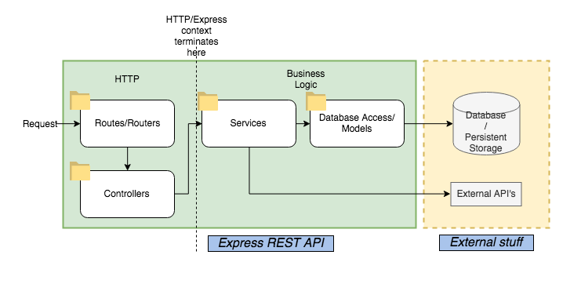
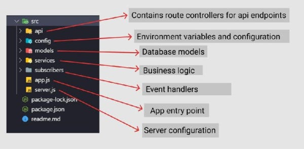
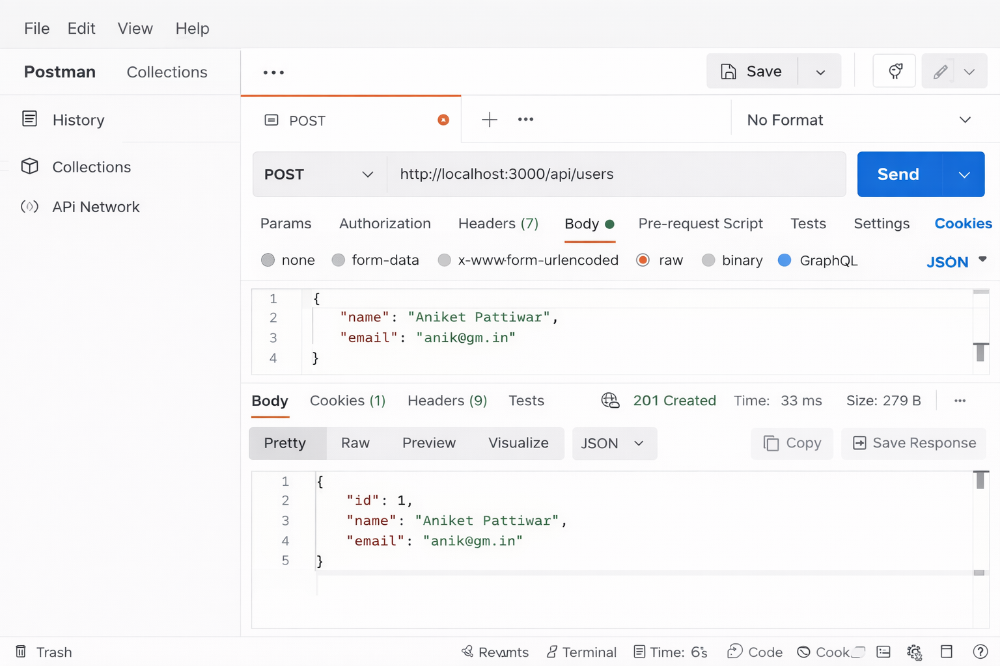
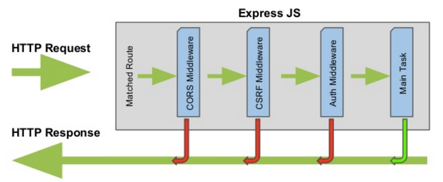
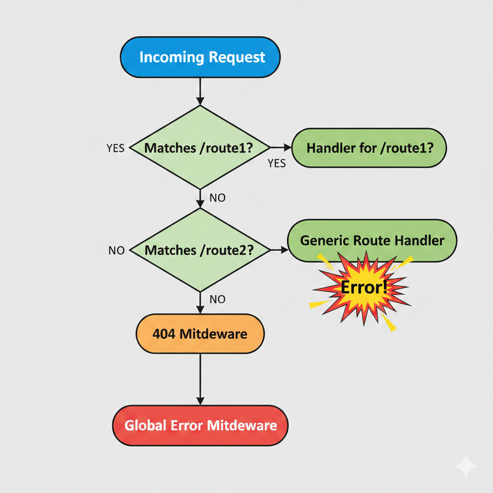

Node's built-in http module gives you raw bricks and cement—you have to manually build every pipe, route, and header parser from scratch. Express is like moving into a modern pre-furnished apartment: it comes with ready-to-use routing, JSON body parsers, and middleware tools so you can launch in minutes.

Figure: Express Project Directory Structure
npm init -y
npm install express
Express routing maps different URLs to specific actions, just like dialing extensions on a hotel intercom:
• GET / → Main reception lobby ('Welcome to our hotel!')
• GET /rooms → Front desk shows you the available rooms catalog
• POST /booking → You hand over your guest details to reserve a room
• DELETE /booking/12 → You cancel reservation #12
Index.js- This code sets up the server, includes a logger middleware, and defines first routes.
const express = require('express');
const app = express();
app.use(express.json());
app.get('/', (req,res)=>{
res.send("Hello Express");
});
app.listen(5000, () => {
console.log('Server running at http://localhost:5000/');
});
Before you build the visual steering wheel and dashboard (the React frontend), you want to test whether the car engine (the Express API) starts, accelerates, and brakes properly. Postman acts as your test driver: it lets you fire GET, POST, PUT, and DELETE requests directly to your backend and see the exact JSON responses before writing a single line of frontend code.
e.g., a `POST` request to `http://localhost:5000/add`.

Middleware functions are functions that have access to the request object (req),
the response object (res), and the next function in the
application's request-response cycle. They can execute code, make changes to the request and
response objects, and end the cycle or pass control to the next middleware.

// middlewareDemo.js - Understanding Express Middleware and next()
const express = require('express');
const app = express();
const PORT = 5001;
// 1. Custom Logger Middleware: runs for EVERY incoming request
app.use((req, res, next) => {
const timestamp = new Date().toLocaleTimeString();
console.log(`📢 [LOGGER] ${timestamp} | ${req.method} ${req.url}`);
// Crucial: Call next() so the request continues to the next handler!
next();
});
// 2. Custom Security / API-Key Middleware for protected routes
const checkApiKey = (req, res, next) => {
const apiKey = req.headers['x-api-key'];
if (apiKey === 'secret123') {
console.log('🔑 API Key verified successfully!');
next(); // Access granted
} else {
console.log('🚫 Access blocked: Missing or invalid x-api-key header');
res.status(401).json({ error: 'Unauthorized: Valid x-api-key header is required.' });
}
};
// Public Route (No auth needed)
app.get('/public', (req, res) => {
res.send('<h1>Public Page</h1><p>Anyone can view this page without an API key.</p>');
});
// Protected Route (Requires checkApiKey middleware)
app.get('/protected', checkApiKey, (req, res) => {
res.json({ message: 'Welcome to the Secret VIP Lounge!', data: [100, 200, 300] });
});
app.listen(PORT, () => {
console.log(`✅ Middleware Demo running at http://localhost:${PORT}`);
console.log(' Public: http://localhost:5001/public');
console.log(' Protected: http://localhost:5001/protected');
});req and res before reaching the route handler. Calling next() passes execution to the next middleware in line. Omitting next() halts the pipeline.
middlewareDemo.js.node middlewareDemo.jshttp://localhost:5001/public in your browser to see the request logged in your terminal.http://localhost:5001/protected in browser and notice the 401 Unauthorized response!📢 [LOGGER] ... | GET /public \n 🔑 API Key verified ...
What happens if a custom middleware function finishes its logic but does NOT call next() and does NOT send a response with res.send() / res.json()?
If a GPS driver tries to turn onto a street that doesn't exist in a neighborhood (e.g. /random-unknown-page), a dead-end sign politely warns them: 'Sorry, this street doesn't exist!'. Placing the 404 middleware at the very bottom of your routes catches any unrecognized request and sends a clean message instead of leaving the browser hanging.
app.use((req, res, next) => {
res.status(404).send("Sorry, that page doesn't exist!");
});This special middleware has four arguments. Use it to catch any server errors.
app.use((err, req, res, next) => {
console.error(err.stack);
res.status(500).send('Something broke!');
});
Before shipping canned food to stores, an automated testing machine tests each can: 'Is the seal tight• Is the weight 500g• Does the barcode scan•'. Supertest does this for your API: it programmatically fires a test request to GET / and verifies: 'Did the server answer with status 200• Does the body contain the welcome text•'.
Install Supertest: npm install --save-dev supertest.
const request = require('supertest');
const app = require('./index');
describe('GET /', () => {
it('Homepage resp', async () => {
const response = await request(app).get('/');
expect(response.statusCode).toBe(200);
expect(response.text).toContain('Welcome');
});
});
Why do developers prefer Express.js over the bare Node.js built-in "http" module?
What is the role of Supertest in Node.js/Express testing?
// errorDemo.js - Custom 404 & Global 4-Parameter Error Middleware
const express = require('express');
const app = express();
const PORT = 5002;
// Standard working route
app.get('/', (req, res) => {
res.send('<h1>Express Error Handling Demo</h1><p><a href="/trigger-error">Trigger an internal error</a> or visit an invalid URL like <a href="/random-url">/random-url</a>.</p>');
});
// Route that simulates an internal code crash
app.get('/trigger-error', (req, res, next) => {
try {
// Deliberately simulate an error (e.g. database failure)
throw new Error('Database connection timed out while querying user record!');
} catch (err) {
// Pass the error directly to the Global Error Handler!
next(err);
}
});
// 1. 404 Handler: Catch all unmatched URLs (Must be placed AFTER all routes)
app.use((req, res, next) => {
res.status(404).json({
status: 404,
error: 'Route Not Found',
path: req.originalUrl,
hint: 'Check your URL endpoint or method'
});
});
// 2. Global Error Handler: Must have exactly 4 arguments (err, req, res, next)
app.use((err, req, res, next) => {
console.error('🔥 Caught by Global Error Handler:', err.message);
res.status(500).json({
status: 500,
error: 'Internal Server Error',
message: err.message,
timestamp: new Date().toISOString()
});
});
app.listen(PORT, () => {
console.log(`✅ Error Handling Demo running at http://localhost:${PORT}`);
});(err, req, res, next). Whenever any route calls next(err), Express bypasses normal handlers and jumps straight to this centralized error handler.
errorDemo.js.node errorDemo.jshttp://localhost:5002/trigger-error in your browser to see the graceful 500 JSON error.http://localhost:5002/unknown-page to see the clean 404 JSON response.🔥 Caught by Global Error Handler: Database connection timed out...
How does Express distinguish a specialized Global Error-Handling Middleware from standard application middleware?
Why is Postman a crucial tool during backend API development before writing React frontend code?
// server.js - Complete, runnable Express.js Server
const express = require('express');
const app = express();
const PORT = 5000;
// Built-in middleware to parse incoming JSON bodies
app.use(express.json());
// In-memory data store for demonstration
let books = [
{ id: 1, title: 'Clean Code', author: 'Robert C. Martin' },
{ id: 2, title: 'The Pragmatic Programmer', author: 'Andrew Hunt' }
];
// 1. Root route - sends HTML
app.get('/', (req, res) => {
res.send(`
<h1>🚀 Express.js Server is Running!</h1>
<p>Try these endpoints:</p>
<ul>
<li><a href="/api/books">GET /api/books (View all books)</a></li>
<li><a href="/api/books/1">GET /api/books/1 (View book #1)</a></li>
</ul>
`);
});
// 2. GET all books
app.get('/api/books', (req, res) => {
res.status(200).json({ success: true, count: books.length, data: books });
});
// 3. GET single book by ID parameter
app.get('/api/books/:id', (req, res) => {
const bookId = parseInt(req.params.id);
const book = books.find(b => b.id === bookId);
if (!book) {
return res.status(404).json({ success: false, message: 'Book not found' });
}
res.status(200).json({ success: true, data: book });
});
// 4. POST create a new book
app.post('/api/books', (req, res) => {
const { title, author } = req.body;
if (!title || !author) {
return res.status(400).json({ success: false, message: 'Please provide title and author' });
}
const newBook = { id: books.length + 1, title, author };
books.push(newBook);
res.status(201).json({ success: true, message: 'Book created successfully!', data: newBook });
});
// 5. Start listening
app.listen(PORT, () => {
console.log(`✅ Express server running at http://localhost:${PORT}`);
console.log('👉 Press Ctrl + C to stop.');
});app.use(express.json()) automatically parses incoming JSON payloads, while app.get() and app.post() define endpoint routes with HTTP status codes like 200, 201, and 404.
npm init -y && npm install expressserver.js in your project folder.server.js.node server.jshttp://localhost:5000/ and http://localhost:5000/api/books✅ Express server running at http://localhost:5000
In Express, which method defines a route handler that listens specifically for HTTP GET requests at the path "/users"?